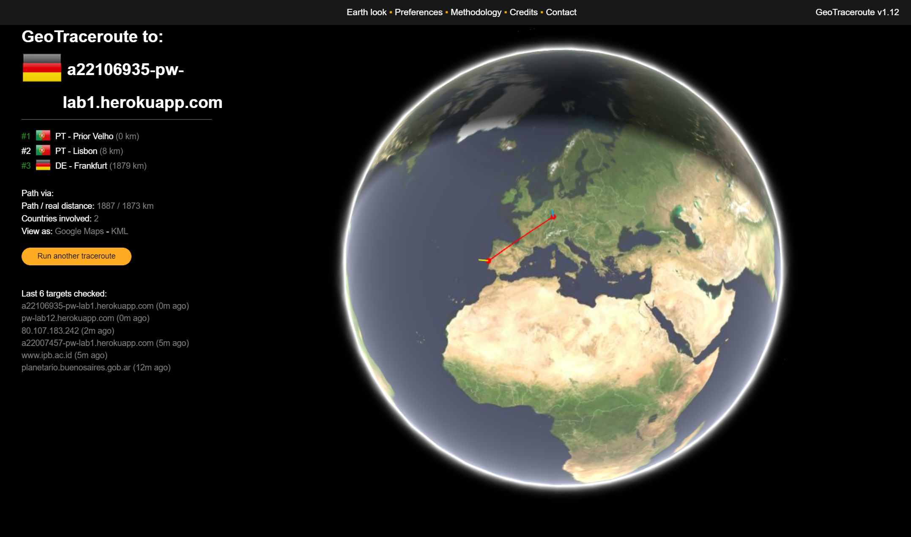

Menu:
O meu IP com a minha localização no site WhatIsMyIPAddress
O IP com a localização do servidor do Heroku no site WhatIsMyIPAddress
Printscreen da linha de comandos, utilizando o comando "tracert" com o IP da app:
Visualização gráfica do percurso dos pacotes IP, até chegar ao servidor Heroku.
Foi utilizado o site GeoTraceroute

Inspeção dos ficheiros descarregados pelo browser no Google Chrome: